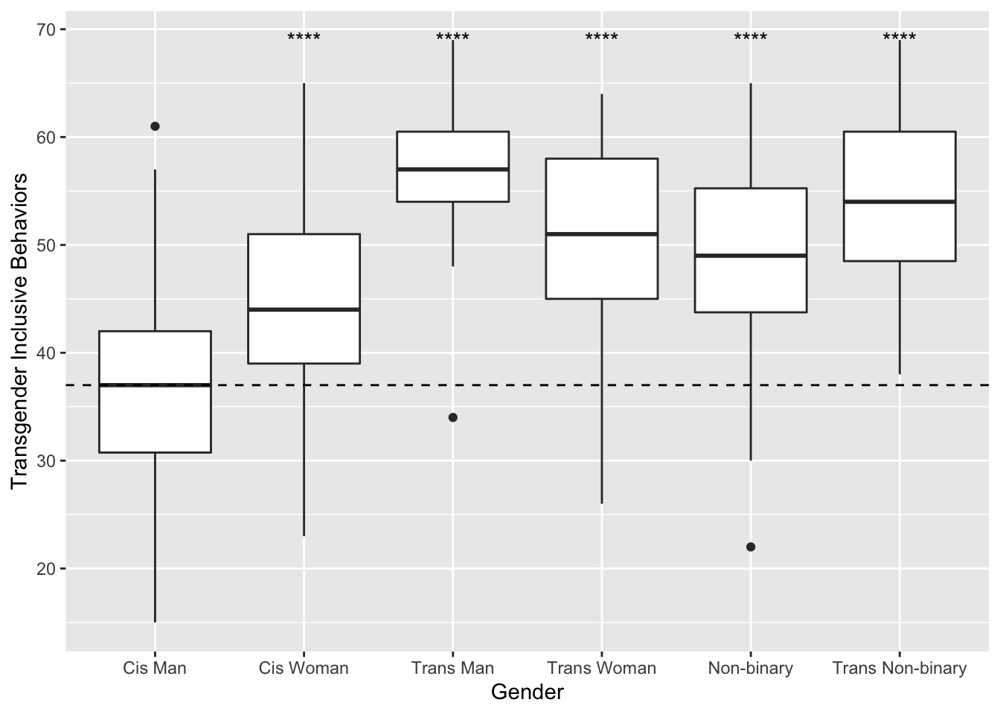

Chapter 4 Results
4.1 Demographics
4.1.1 Gender
I collected gender-related demographic data by asking participants to write in their gender identity and answer a series of yes/no questions: “Are you cisgender?,” “Are you transgender?,” and “Is your gender non-binary?” Answering yes on one question did not force the participants to answer no on others—this treated gender identity as a collection of separate, related labels that participants may or may not identify with simultaneously. Responses for the write-in question were qualitatively coded by me.
Overall, 317 participants identified as cisgender, 81 identified as transgender, and 141 identified their gender as non-binary. It is important to note that there is overlap among these groups. 63 participants said they were transgender and non-binary, 16 participants said they were cisgender and non-binary, and 1 participant said they were cisgender, transgender, and non-binary.
Qualitative themes were decided by the author after examining the data and consulting with a number of gender-diverse peers. The most commonly occuring themes were woman (N = 220), man (N = 120), non-binary (N = 94), cisgender (N = 36), transgender (N = 26), questioning (N = 24), masculine (N = 18), agender (N = 15), genderfluid (N = 15), and queer (N = 8).
4.1.2 Pronouns
Participants were asked their pronouns in a write-in box. Pronouns were qualitatively coded by the author. No participants reported using any other pronouns besides he/him, she/her, and they/them. However, many participants reported using multiple pronouns.
| Pronouns | N |
|---|---|
| she/her | 199 |
| he/him | 127 |
| they/them | 65 |
| she/her & they/them | 35 |
| he/him & they/them | 19 |
| all pronouns | 9 |
| he/him & she/her | 2 |
4.2 Experiences with Misgendering
Adding missing grouping variables: `cis`Similar to McLemore (2015), we had participants report how frequently they were misgendered and how stigmatized misgendering made them feel. However, unlike McLemore (2015), we administered these questions to cisgender people as well. Independent t-tests were used to compare the cisgender and non-cisgender participants. Non-cisgender participants (M = 3.28, SD = 0.96) reported being misgendered more frequently than cisgender participants (M = 1.45, SD = 1.45), t(230.94) = 21.6, p < 0.001. Non-cisgender participants (M = 3.15, SD = 1.3) also reported feeling more stigmatized when misgendered than than cisgender participants (M = 1.59, SD = 1.59), t(261.058643) = 12.9, p < 0.001.
| “How often do people ‘misgender’ you?” | Non-cisgender (%) | Cisgender (%) |
|---|---|---|
| Never | 6.4 | 68.8 |
| Rarely | 14.0 | 24.9 |
| Sometimes | 30.6 | 4.7 |
| Often | 44.6 | 1.3 |
| Always | 4.5 | 0.3 |
| “I feel stigmatized (looked down upon)when I am misgendered.” | Non-cisgender (%) | Cisgender (%) |
|---|---|---|
| Not at all | 12.2 | 68.5 |
| Slightly | 20.5 | 12.0 |
| Somewhat | 28.2 | 13.4 |
| Considerably | 18.6 | 4.0 |
| Very | 20.5 | 2.2 |
Pearson’s Chi-squared tests were used to compare the misgendering frequency observed in McLemore (2015) to the non-cisgender participants in the present study. There were significant differences when compared to both the study 1 population, X2 (4, N = 864) = 178.18, p = 0, and the study 2 population, X2 (4, N = 902) = 228.69, p = 0.
McLemore (2015) performed a one-way ANOVA “to compare differences among three gender groups (transgender men, transgender women, and genderqueer)” in misgendering frequency and felt stigma when misgendered. Because a different approach was taken in collecting gender-related demographic data, we performed a factorial ANOVA comparing endorsement of several endorsed identities on misgendering frequency and felt stigma.
There were multiple significant effects of identity endorsement on misgendering frequency. Cisgender, F(6, 448) = 111.97, p < 0.001, transgender, F(448, 448) = NA, p < 0.001, and non-binary identity, F(NA, 448) = NA, p < 0.001, all demonstrated significant effects. There was no significant effect in women (p = NA) or men (p = NA) alone. However, there was a significant effect in transgender women, F(NA, 448) = NA, p < 0.001. There was not a significant effect in transgender men (p = NA). There was also a significant effect in non-binary women , F(NA, 448) = NA, p = NA, but not in non-binary men (p = NA).
There were also multiple sigificant effects of identity endorsement on felt stigma when misgendered. Cisgender, F(6, 408) = 42.72, p < 0.001, and transgender , F(408, 408) = NA, p < 0.001, identities demonstrated significant effects. However, non-binary (p = NA) identity did not show a significant effect. Neither men (p = NA) nor women (p = NA) alone showed significant effects, nor did trans women (p = NA). However, trans men, F(NA, 408) = NA, p < 0.001, demonstrated a significant effect. Neither non-binary men (p = NA) nor non-binary women (p = NA) demonstrated a significant effect.
Unlike McLemore (2015), participant pronouns were also collected. This allowed us to perform a factorial ANOVA with a follow-up Tukey test to examine pronouns, independent of gender, had an effect on misgendering frequency. I will finish this paragraph later lol once i figure out if it’s actually relevant or not lol.
4.3 Gender Congruence
Kozee, Tylka, & Bauerband (2012) developed the TCS (Transgender Congruence Scale) to measure transgender individuals’ relationship and comfort between their inner gender identity, physical appearance, and social experience of gender. In this study, the TCS was administered to cisgender participants as well.
A single sample t-test revealed that non-cisgender participants (M = 34.26, SD = 5.5) scored lower on the TCS than cisgender participants (M = 45.53, SD = 6.23), t(348.89) = -20.04, p < 0.001.
A factorial ANOVA demonstrated significant effects of cisgender, F(6, 445) = 71.24, p < 0.001, and non-binary identification, F(NA, 445) = NA, p < 0.001, but not of transgender identification (p = NA). There were also no significant effects in men (p = NA), women (p = NA), trans men (p = NA), trans women (p = NA), non-binary men (p = NA), and non-binary women (p = NA).

4.4 Transgender Inclusive Behaviors
Kattari, O’Connor, & Kattari (2018) developed the Transgender Inclusive Behavior Scale (TIBS) as a method of quantifying the number of behaviors that may support and include transgender people that one regularly does. Scores are a sum of responses on a series of five-point likert scales ranging from “Never” to “Often.”
A single-sample t-test revealed that non-cisgender people (M = 51.34, SD = 9.14) reporting performing more inclusive behaviors than cisgender people (M = 41.98, SD = 9.26), t(304.22) = 10.22, p < 0.001.
A one-way ANOVA demonstrated that there was a significant effect of gender F(6, 249) = 26.53, p < 0.001. A Tukey post-hoc comparison revealed that cisgender men (M = 37.31, SD = 8.92) do significantly fewer trans inclusive behaviors than cisgender women (M = 44.43, SD = 8.18), transgender men (M = 55.91, SD = 9.16), transgender women (M = 50.58, SD = 9.97), cisgender non-binary people (M = 45.73, SD = 8.18), non-binary people (M = 49.26, SD = 9.3), and transgender non-binary people (M = 53.85, SD = 7.71). Cisgender women do significantly fewer trans inclusive behaviors than transgender men, transgender women, non-binary people, and transgender non-binary people. Cisgender non-binary people also do fewer trans inclusive behaviors than transgender non-binary people.
